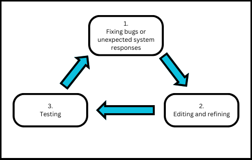

-
Introduction
Emotion-inducing Virtual Reality (VR) applications are used for diverse purposes, including exposure therapy, psychotherapy, studying human beahviour, and enhancing social skills. An area with limited research, but growing interest, is the use of VR to elicit awe. Research suggests the emotion can lead to transformative changes in physical and psychological aspects, offering benefits such as improved wellness, increased social interaction and environmental consciousness. However, financial and physical constraints limit access to awe-inspiring experiences.

Goals
The goal of all three VEs was to achieve an awe-response. The VEs each incorporated different stimuli designed to induce awe through various means.
Development
Both VEs made use of several user-testing phases in order to guide design and subsequent implementation steps. The Sadness environment was developed as an extension of an existing environment, while the Fear environment was developed specifically for the project experiment.

Fear VE prototype diagram

A screenshot of a previous version of the Sadness VE
User Tests
Participants were recruited from UCT to test the three VEs.
Participants were monitored for physiological measures of awe, including heart rate (HR) and respiration rate (RR), both at a baseline tutorial VE, and during immersion.
Post-immersion measures for subjective experience of awe included the Awe-Scale Questionnaire as well as a Likert Scale Questionnaire to rate their extent of the listed emotions experienced. These self-report measures were completed before a final debriefing which concluded the user experiment.
-
Design
When designing a VE intended to elicit fear in participants, it was important to consider how the use of certain themes and fear triggers could produce widely varying results from the expected sample group. It was decided that the content of the VE should be effective in producing overt signs of fear, even in a non-phobic group.
As the environment aimed to measure participant response to an event where they no longer had control over the main task of the environment, it would be necessary to have the participants complete some dangerous activity

Theme. The primary design focus of this VE was to create a fear-inducing scenario, grounded in realism. Acrophobia, or the fear of heights, was chosen as the central fear trigger, rather than horror themes, which have been used in past VR experiments involving fear


Location. An elevated, urban construction environment was chosen as the location for the VE. A city scene could be populated with surrounding buildings and street level props, which were thought to be effective in creating a realistic sense of scale. This could also be aided by having the user interact with a construction lift, which would rise to a platform from the street. Finally, the construction environment would provide the obvious, thematically sound interaction task for the VE, in the form of various machine parts that would need to be fixed with a tool
Interaction Task
Users were tasked with fixing various machine parts, placed around an elevated platform, in order to fix the lift that they arrived on. The task was split into two distinct sections:

Step 1. The user interacts with a grabbable moving mechanism

Step 2. The user fastens a nut and bolt mechanism found on the part, using a tool
In the experiment, participants were monitored during a scripted event where they lost this tool, and could no longer complete the interaction task of the VE
Fear-Inducing Events
Lift Raise
The initial fear-inducing trigger is when the lift rises from the ground to the elevated platform. This is triggered by button press by the participant. User immersion was heightened through the use of a haptic ledge, made of wood, which participants traversed during the experiment


Lift Malfunction
As the user steps off the lift, it will begin to malfunction. It will jerk around the centre of the platform, erratically, while the various broken parts around the platform emit sparks and smoke. Malfunction state is progressed by fixing a part, or automatically over time, as can be seen in the table below

This table details the different stages of the VE, as well as the duration of each if the user remains idle
Tool Loss
When triggered to lose the tool, a strong haptic buzz is sent to the controller gripping the tool and it is then forced from the user’s grip. This causes the tool to either fall off the side of the platform, or down the central shaft, and clang on its way down, or fall to the ground on the platform and break apart.
This event serves as the central difference between the ennvironments experienced by the two testing groups.
Experiment and Results
In the user study (n=36), we tested whether the sudden restriction of user control has an effect on the fear elicited in a VE. The sample was split into two groups, with one experiencing an event that prevented them from completing the stated interaction task of the VE (Tool Loss), while the other was able to complete the VE’s content until the point that they were timed out (No Loss). Importantly, the contents of the simulation were identical aside from this, with the same outcomes for each VE
Comparison scores for change in objective measures, between the two treatments, were calculated by taking the average measures of HR, RR and SCL over the last 40 seconds of immersion and subtracting the average measures of the preceding period. This would indicate whether the approximate period where the Tool Loss group’s control was restricted caused an arousal of fear, and whether that was more than the same period in the No Loss group. These change scores were then analysed for significance with a paired t-test
Participants in the Tool Loss treatment displayed a significantly greater increase in HR during the monitored period
Verbal subjective measures (DEQ and VAS) did not differ significantly in self-reported fear. Non-verbal measures (SAM) indicated that participants in the Tool Loss treatment experienced a significantly greater feeling of general excitement and a significantly lower feeling of control over their emotions, than the No Loss group
Conclusions
(i) the environment was successful in producing arousal, and possibly fear
(ii) the variable of agency, resulting from a loss of user control, may have had the effect of producing greater sense of fear in participants.
-
Design
When designing an environment to induce awe using ancient architecture like Petra, there are several key points in the model that must be considered before the actual development. These include how realistic we want the model to be, the trade-off between quality and frame rate, and how are we going to induce awe in the users. The model must ensure that the design respects and represents the ancient architecture of Petra.
Why Petra
Petra, often referred to as the ‘Rose City’ due to its pink appearance of its sandstone cliff, and was well known for its spectacular tombs, monuments, and houses that was carved into sandstone cliffs.
For past centuries, the lost city was little known in the western world due to the limitations of technology and how information travels. Today, many have read and seen pictures of this magnificent architecture, but few have experienced it in person. Through this VR project, we aim to build a model of Petra, allowing users to experience Petra as they are in person and enabling them to immerse themselves into this truly awe-inspiring experience.

Trigger. The primary focus of the environment was creating a awe-inducing environment. To induce awe in participants, the environment is mainly designed around 2 inducing elements, immense size and quality in details, which was proven to be effective by studies around the world.
Scaling wonder. One of the unique features of Petra is its mix of grand structure and small, intricate carvings. From vast structures like the Bab Ai Siq to the tiny details on the sculptures on the treasury building. This model will ensure that users can experience both the grandeur and the detailed artistry that defines Petra.
Experiment and Results
In the user study (n=10)), we tested whether grand ancient architecture like Petra has an effect on awe elicitation in a virtual environment. All participants went through the same process from the tutorial to the completion of the virtual environment. The tutorial is 5 minutes long with the main environment being 10 minutes. The participants are allowed to end the tutorial and main environment early if they want to.
There are two measurements taken during the experiment, objective measures such as heart rate (HR), respiratory rate (RR) and Respiratory Sinus Arrhythmia (RSA) and subjective measures being the survey participants took before the experiment and questionnaires after conducted the experiment. The objective analysis was calculated by taking the average HR, RR, and SCL after 3 minutes of the immersion until the end of it, removing the possibility of measuring the awe effect from the VR experience rather than the environment.
The objective results reviewed minor different between the HR and RR, which can be negligible. However, RSA showed that the Petra VE do have an effect that could be awe on participants. The sample size is too small make definitive claims.The subjective measures did show that participants experienced awe in the experiments, followed by amusement and joy. The scores for questions that is linked to awe emotion score mostly within the medium high to high spectrum (7+/10).
Conclusions
The environment made can be considered successful in eliciting awe due to positive result for RSA and subjective measure. However, we cannot make a conclusive station about this project due to limitation in sample size and objective measures (n=10). More testing and validations are required to make the results be significant to make a definitive claim that participants experienced awe during the experiment.
Abstract
This user study (n=10) serves as a pilot investigation into a solution to inducing awe in a virtual environment, with the aim of assisting further research into the emotion and contributing to psychotherapy and the rehabilitation process of depression. The immersive environment comprises a range of known awe-inducing factors all encapsulated in a mountainous scene. Vast mountain landscapes viewed from high above, closeup steep cliffs, real-world audio, and intricate detail were all incorporated into the simulated environment to create an immersive scene. The built scene was tested against a control environment which induced no emotion. As anticipated, the findings demonstrated that the awe-inducing virtual environment elicited higher levels of awe and presence than the control VE. These results affirm the immersive potential of VR in generating awe and offer valuable insights for crafting awe-inspiring virtual environments.
Environment Outline
The final VE used for the user study is a mountain scene where the user is positioned high up the mountain.

The user is free to walk along the side of the mountain with a steep cliff of the mountain above to their one side and a vast mountain range on the other side. The VE was designed to elicit awe through the height and expansiveness of the setting.Environment Development
The development of the project was the second iteration whereby an agile approach was implemented as follows:
Results
Physiological Results
The physiological results indicate lower respiration rate and significantly higher heart rate in the mountain VE. This is summarised below:


Self-Report Results
The self-reported results indicate that significantly higher awe was induced in mountain VE. A deeper view is summarised below:

Emotion Questionnaire
Awe-Scale Questionnaire

Conclusions
1) The results of the user study largely indicate that higher levels of awe were experienced in the mountain VE compared to the control VE.
2) Future studies can enhance the robustness of these findings by conducting a similar experiment with increased control measures. We suggest a larger participant pool, an improved training setup or blocking of subjects to mitigate the impact of lack of VR experience, and a small camera to record goosebumps to develop a more comprehensive understanding of the emotion.


{kind=link}